학습 목표 (Learning Objectives)
- ✓태풍의 발생, 이동, 소멸 과정 및 태풍의 영향권(위험 반원·가항 반원)에서 날씨 변화를 예측할 수 있다.
- ✓뇌우, 집중 호우, 우박, 폭설, 황사 등 주요 악기상의 생성 과정과 대처 방안을 제시할 수 있다.
핵심 개념 체크리스트
학습을 마친 개념은 직접 체크해보세요!
2026 사대부고 고2 지구과학 자체 교재 원문 기반
동기 유발 · 생각해보기
수업 시작 전 핵심 질문
Q. 매년 여름과 초가을 우리나라는 태풍에 의해 많은 피해를 입는다. 태풍은 왜 적도가 아닌 열대 해상에서 발생하여 우리나라가 있는 중위도로 이동하는 것일까?
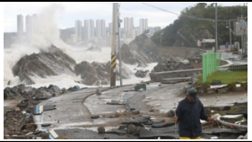
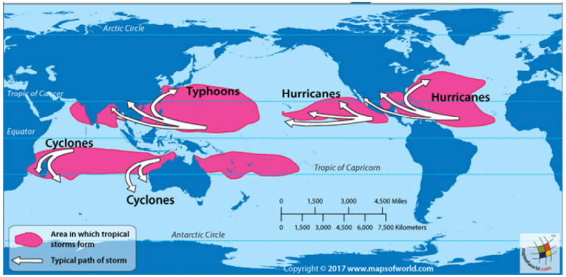
💡 먼저 스스로 이유를 추론해 본 뒤 버튼을 눌러 확인해보세요!
✨ 과학적 해설 및 모범 답안
수온이 $27\text{℃}$ 이상인 열대 해상에서 다량의 수증기를 공급받아 발생하되, 적도($0^\circ$)에서는 소용돌이를 만드는 전향력(지구 자전 효과)이 $0$이므로 발생하지 못하고 위도 $5^\circ\sim 25^\circ$ 해상에서 발생합니다. 이후 무역풍을 타고 북서진하다가 위도 $30^\circ$ 부근에서 편서풍을 만나 진행 방향을 북동쪽으로 꺾어 우리나라 쪽으로 이동하며 저위도의 남는 열에너지를 고위도로 수송합니다.
핵심 개념 1
1. 태풍의 발생, 구조 및 이동
(1) 태풍의 발생 조건과 구조
- •태풍의 정의: 북서 태평양에서 발생하는 열대 저기압 중 중심 부근 최대 풍속이 $17\text{ m/s}$ 이상인 폭풍우를 동반한 거대한 소용돌이
- •발생 조건: 수온 $27\text{℃}$ 이상의 위도 $5^\circ\sim 25^\circ$ 열대 해상 (적도 부근은 전향력이 없어 발생 X, 전선을 동반하지 않음!)
- •태풍의 에너지원: 상승 기류에서 수증기가 응결(액화)할 때 방출하는 숨은열(잠열)
- •태풍의 구조와 태풍의 눈: 중심부로 갈수록 기압은 급격히 낮아지고 풍속은 강해지지만, 태풍의 중심(태풍의 눈)에서는 약한 하강 기류가 나타나 구름이 없고 바람이 매우 약하며 날씨가 맑다.
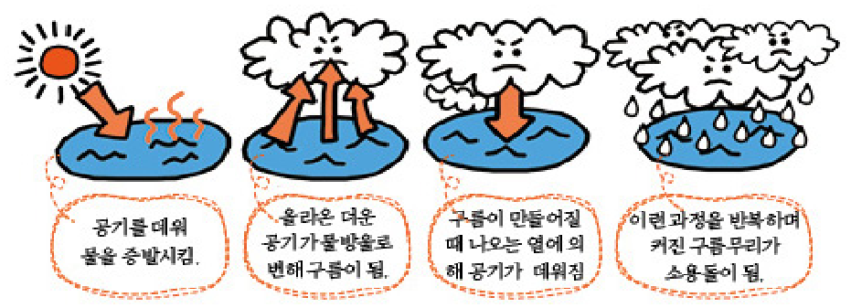
" class="max-h-72 w-auto object-contain rounded-lg group-hover:scale-[1.02] transition duration-300 cursor-zoom-in" onclick="openLightbox(this.src, '교재 그림: <태풍의 입체 구조와 기류 분포>')" loading="lazy" />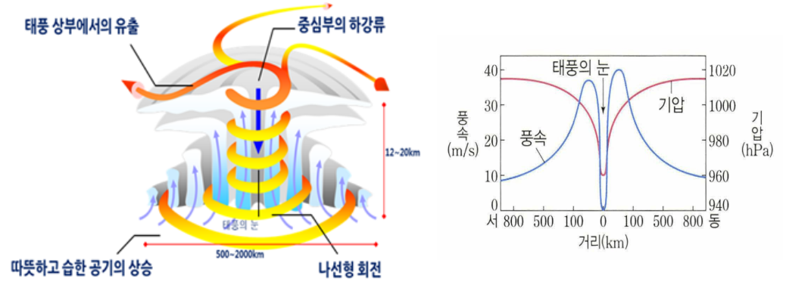
" class="max-h-72 w-auto object-contain rounded-lg group-hover:scale-[1.02] transition duration-300 cursor-zoom-in" onclick="openLightbox(this.src, '교재 그림: <태풍 중심으로부터의 거리에 따른 기압과 풍속 분포>')" loading="lazy" />(2) 태풍의 이동 경로와 위험 반원 vs 가항 반원 (중요!)
- •포물선 이동 경로: 북태평양 고기압의 가장자리를 따라 시계 방향으로 휘어지며 이동한다. (저위도 무역풍에 의해 북서진 ➔ 위도 $25^\circ\sim 30^\circ$ 전향점에서 방향 전환 ➔ 중위도 편서풍에 의해 북동진)
- •태풍의 소멸: 육지에 상륙하면 수증기 공급이 차단되고 지표면과의 마찰로 인해 운동 에너지를 잃어 열대성 저기압이나 온대 저기압으로 변질·소멸한다.
| 구분 | 위험 반원 (태풍 진행 경로의 오른쪽) | 가항 반원 (태풍 진행 경로의 왼쪽) |
|---|---|---|
| 풍속 비교 | 태풍 자체 바람 방향과 태풍 이동 방향이 일치하여 풍속이 매우 강함 (피해 극심) | 태풍 자체 바람 방향과 태풍 이동 방향이 반대여서 풍속이 상대적으로 약함 |
| 풍향 변화 (⭐ 시험 핵심) | 태풍 통과 시 관측소의 풍향이 시계 방향으로 변함 (동풍 ➔ 남풍 ➔ 서풍) | 태풍 통과 시 관측소의 풍향이 시계 반대 방향으로 변함 (북동풍 ➔ 북풍 ➔ 북서풍) |
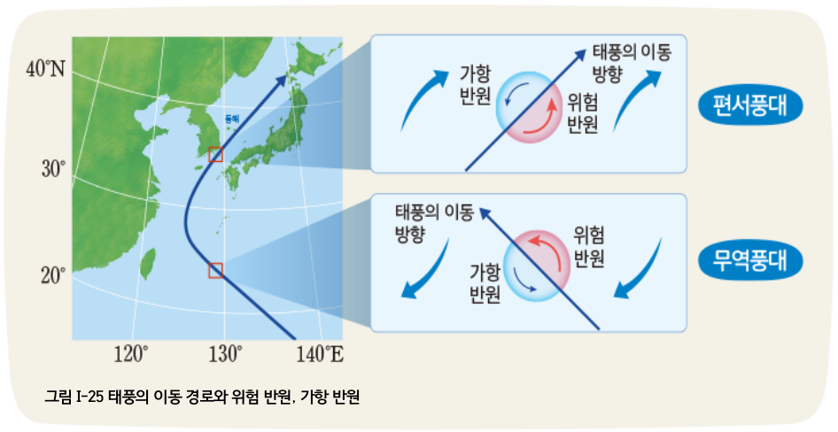
" class="max-h-72 w-auto object-contain rounded-lg group-hover:scale-[1.02] transition duration-300 cursor-zoom-in" onclick="openLightbox(this.src, '교재 그림: <태풍의 이동 경로와 위험 반원(오른쪽), 가항 반원(왼쪽)>')" loading="lazy" />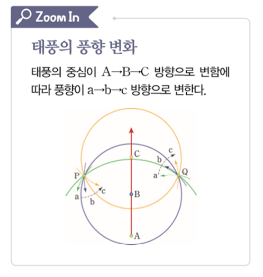
" class="max-h-72 w-auto object-contain rounded-lg group-hover:scale-[1.02] transition duration-300 cursor-zoom-in" onclick="openLightbox(this.src, '교재 그림: <태풍 통과 시 관측소의 풍향 변화>')" loading="lazy" />
핵심 개념 2
2. 우리나라의 주요 악기상 (뇌우·집중 호우·우박·폭설·황사)
(1) 뇌우의 발달 3단계와 우박·집중 호우
- •뇌우(Thunderstorm)의 발달 3단계:
① 적운 단계: 강한 상승 기류만 존재하며 적운이 수직으로 성장 (강수 현상 없음)
② 성숙 단계: 상승 기류와 하강 기류가 공존하며 천둥, 번개, 소나기, 우박, 돌풍이 가장 강하게 나타나는 단계
③ 소멸 단계: 구름 전체에 하강 기류가 우세해지며 약한 비가 내린 뒤 구름이 소멸함 - •집중 호우: 1시간에 $30\text{ mm}$ 이상 또는 하루 $80\text{ mm}$ 이상(연 강수량의 10% 이상) 쏟아지는 폭우
- •우박(Hail): 주로 초여름이나 가을철, 적란운 내부의 강한 상승 기류와 하강 기류를 타고 얼음 알갱이가 상승과 하강을 반복하며 과냉각 물방울이 얼어붙어 투명/불투명한 동심원 층상 구조로 지름 $5\text{ mm}$ 이상 성장해 떨어지는 얼음 덩어리 (겨울철에는 상승 기류가 약해 우박이 잘 생기지 않음!)
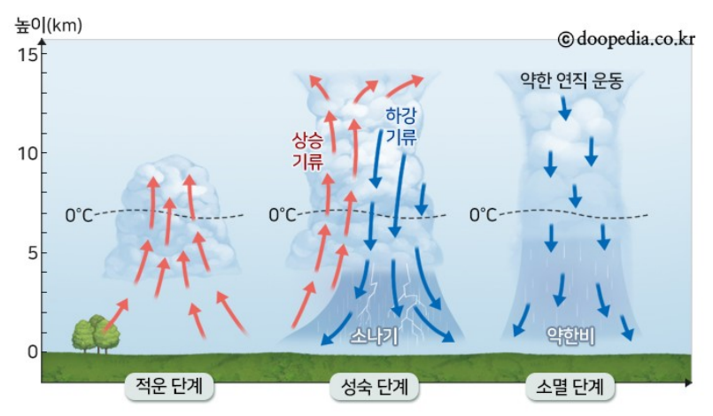
" class="max-h-72 w-auto object-contain rounded-lg group-hover:scale-[1.02] transition duration-300 cursor-zoom-in" onclick="openLightbox(this.src, '교재 그림: <뇌우의 발달 3단계 (적운 단계 ➔ 성숙 단계 ➔ 소멸 단계)>')" loading="lazy" />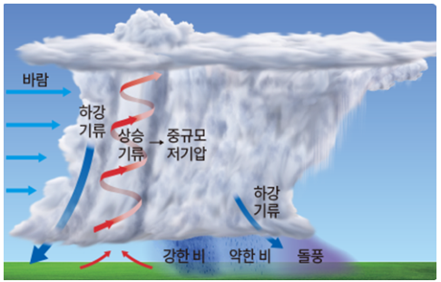
" class="max-h-72 w-auto object-contain rounded-lg group-hover:scale-[1.02] transition duration-300 cursor-zoom-in" onclick="openLightbox(this.src, '교재 그림: <중규모 저기압에 동반되는 강한 뇌우 구조>')" loading="lazy" />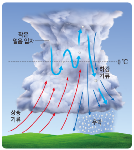
" class="max-h-72 w-auto object-contain rounded-lg group-hover:scale-[1.02] transition duration-300 cursor-zoom-in" onclick="openLightbox(this.src, '교재 그림: <적란운 내부에서 상승·하강을 반복하는 우박의 생성 과정>')" loading="lazy" />(2) 서해안 폭설(기단의 변질)과 황사
- •⭐ 서해안 폭설과 시베리아 기단의 변질: 겨울철 차갑고 건조한 시베리아 기단이 상대적으로 따뜻한 황해(서해)를 지날 때 바다로부터 열과 수증기를 공급받아 기단 하층부가 가열·불안정해진다. 그 결과 강한 상승 기류와 적운형 구름 띠가 발달하여 서해안 지역에 폭설을 내린다.
- •황사: 중국 북부나 몽골의 건조·사막 지대에서 저기압(상승 기류)과 강풍에 의해 상공으로 올라간 미세한 모래 먼지가 편서풍을 타고 동쪽으로 이동하여 우리나라에서 고기압(하강 기류)을 만나 서서히 하강하는 현상 (주로 봄철 발생)
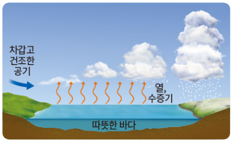
" class="max-h-72 w-auto object-contain rounded-lg group-hover:scale-[1.02] transition duration-300 cursor-zoom-in" onclick="openLightbox(this.src, '교재 그림: <시베리아 기단이 황해를 지나며 변질되어 서해안에 폭설을 내리는 과정>')" loading="lazy" />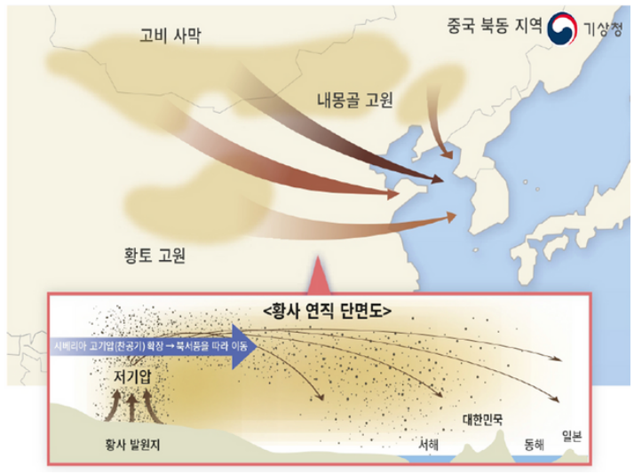
" class="max-h-72 w-auto object-contain rounded-lg group-hover:scale-[1.02] transition duration-300 cursor-zoom-in" onclick="openLightbox(this.src, '교재 그림: <황사의 발원지와 편서풍에 의한 이동 경로>')" loading="lazy" />
Interactive Checkpoints
클릭하면 교재 빈칸 정답과 해설이 나타납니다
단원 개념 적용하기 & 확인 문제
Q1
교재 p.19 확인: 태풍이 우리나라 서해안을 따라 북상할 때 서울이나 대전 등 내륙 관측소는 어떤 반원에 위치하며, 시간에 따라 풍향은 어느 방향으로 변하는가?
모범 답안 및 해설
태풍 이동 경로의 오른쪽에 해당하므로 위험 반원에 위치합니다. 따라서 풍속이 매우 강하며, 시간이 지남에 따라 풍향은 시계 방향(동풍 ➔ 남동풍 ➔ 남서풍 ➔ 서풍)으로 변합니다.
Q2
교재 p.21 확인: 차갑고 건조한 시베리아 기단이 겨울철 서해안에 많은 눈(폭설)을 내리는 이유를 '기단의 변질'로 설명하시오.
모범 답안 및 해설
한랭 건조한 시베리아 기단이 상대적으로 수온이 높은 황해(서해) 위를 통과하면서 하층에 다량의 열과 수증기를 공급받아 대기가 불안정해지고, 상승 기류가 발달하여 적란운(눈구름 띠)이 생성되기 때문입니다.